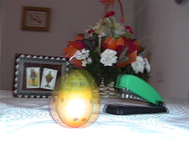
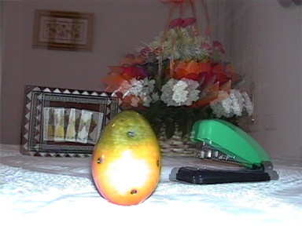

El model de càmera binocular que acabem d'introduir ens permetrà analitzar la disparitat retinal de cada punt d'una escena.
Donat un punt de la imatge projectada a la retina de l'ull dret, i un altre punt de la imatge projectada a la retina de l'ull esquerre, es diu que aquests dos punts són homòlegs si corresponen a la projecció del mateix punt de l'escena real:
La disparitat retinal és defineix com la distància horitzontal existent entre punts homòlegs, mesurada en una retina "ideal". També podem parlar de la disparitat retinal d'un punt de l'escena, entenent que ens referim a la disparitat entre la projecció d'aquest punt en cada retina:
Considereu l'observador binocular de la següent figura, on les fletxes indiquen la direcció dels eixos òptics:
Recordeu que, per definició, els punts situats sobre un eix òptic es projecten al centre de la retina corresponent. Per tant, el punt C on es creuen els dos eixos òptics, es projectarà al centre de les dues retines. Per tant, la disparitat retinal del punt C serà zero.
Considereu ara el punt a de la figura anterior. A la retina esquerra, el punt a es projectarà a la meitat dreta de la retina (està a la dreta de l'eix òptic de l'ull esquerre). Simètricament, a la retina dreta el punt a es projectarà a la meitat esquerra. Per tant, el punt a tindrà una disparitat no nul·la. Si superposem les dues imatges, veuríem com la posició més a l'esquerra del punt a correspon a la retina dreta. Quan es dona aquesta circumstància, diem que la disparitat és negativa. La següent figura il·lustra un objecte amb disparitat negativa (el quadrat verd). Els ulls estan representats per dues esferes blaves, i cada retina per un rectangle (a dalt vist de cara, a sota vist de dalt):
Considereu ara el punt b de la figura del observador binocular. A la retina esquerra, el punt b es projectarà a la meitat esquerra de la retina. Simètricament, a la retina dreta el punt b es projectarà a la meitat dreta. Per tant, el punt b tindrà una disparitat no nul·la que en aquest cas direm que és positiva, doncs si superposem les dues imatges, veuríem com la posició més a l'esquerra del punt a correspon a la retina esquerra. La següent figura il·lustra un objecte amb disparitat positiva:
Per tant, cada punt de l'escena pot tenir un d'aquests tres tipus de disparitats retinals:
La següent figura mostra les regions de l'espai amb disparitat positiva (regió blava), disparitat negativa (regió vermella) i disparitat nul·la (a la frontera). De fet, podeu comprovar que la zona de disparitat nul·la està definida per la circumferència definida per la posició dels dos ulls i pel punt de convergència:
És important destacar que cada punt de l'escena té la seva pròpia disparitat retinal, i que si variem la convergència dels ulls, varia també la disparitat. Per exemple, si els eixos òptics estan paral·lels (quan mirem a l'infinit), tots els objectes de l'escena tenen disparitat negativa, que serà més gran (en valor absolut) quan més proper estigui l'objecte de l'observador.
Aquí teniu un altre exemple, aquest cop amb fotografia 3D. La fotografia de l'esquerra s'ha pres amb un punt de convergència situat en el centre de les flors. Si suposem que la fotografia es correspon amb la superposició de les imatges projectades en les dues retines, podem dir que els objectes més propers tenen disparitat negativa, que com podreu apreciar és més accentuada en els objectes més propers. En canvi, el quadre del fons té disparitat positiva. La figura de la dreta s'ha pres amb un punt de convergència situat a la peça groga situada en primer pla. La resta d'objectes tenen disparitat positiva, més accentuada quan més lluny estan els objectes.
|
 |
 |
Si anomenem zona de convergència a la circumferència
delimitada pels ulls i el punt de convergència (on la disparitat és
nul·la), podem dir que la disparitat retinal creix (en valor
absolut) a mesura que ens allunyen de la zona de convergència.